Mobile
registration
Read time: 12 minutes
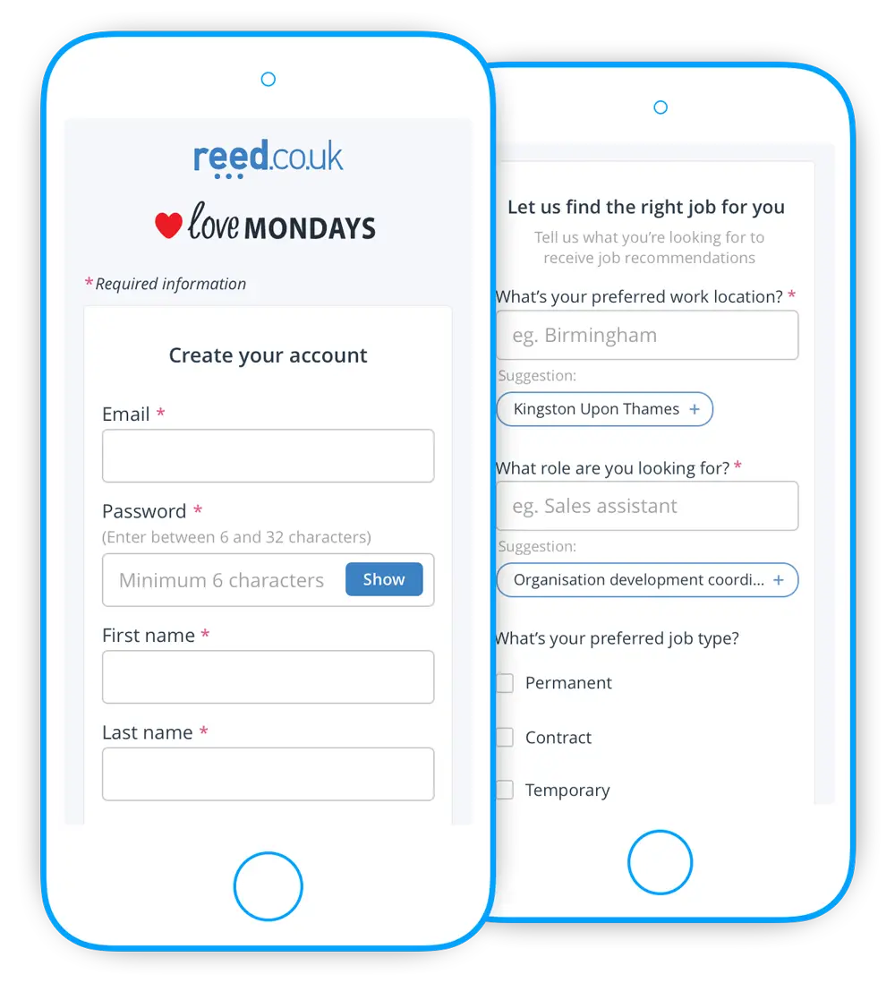
Company:
Reed job search — London
My role:
UX/UI Designer
Timeframe:
Six weeks
Skills:
Research, workshopping, usability testing, UX/UI design
The problem
The current year on year growth of job seeker registrations and CV uploads had dropped 15% on the reed.co.uk website. Data analysis showed that there had been a major uplift in traffic from mobile and tablet devices in the last year, but this traffic was not converting into as many registrations and CV uploads as desired. Within three sprints we were given the challenge of:
- Lifting registration conversion levels (with an emphasis on mobile and tablet) to ensure continued year on year growth
- Finding out why CV uploads on mobile and tablet were so low
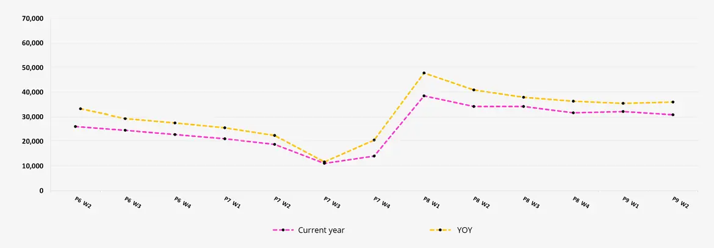
TL;DR
The solution
Combining A/B and usability testing we were able to prove that our changes would start to grow registration numbers again. These changes included:
- Reducing friction
- Making language more clear and concise
- Guiding job seeker decisions using past behavioural data
The insights gathered from usability sessions also gave a deeper understanding of why CV uploads were low on mobile and tablet, which will lead to better solutions for the job seeker in the future.
Read the in-depth casestudy below 🤓
Discovery phase
Research
Choice of two
Registering on the reed site contained two similar user journeys:
- The apply journey is the full registration process and is for users who apply for a job
- The quick reg journey is for users who click register on the main navigation (skipping the about you screen)
We decided from the start that we would concentrate our efforts on the apply journey as this included the whole registration journey. Our assumption was that job seekers coming through this journey are actively applying for a job so are therefore more motivated to complete the registration.
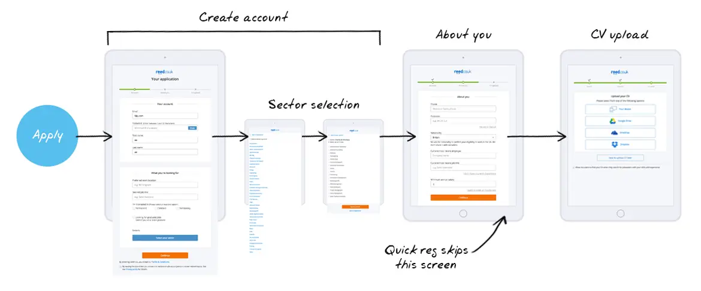
Understanding the jobseeker
As I was new to the job seeker channel I wanted to understand who our current audience was and who I would be designing for. To kickstart this understanding I decided to do two things:
- Review the two job seeker personas that had recently been created and see if there was anything else that needed validating about them
- Run a persona empathy mapping workshop with the current job seeker scrum team and stakeholders
Persona review
The previous UX designer on the job seeker scrum team had just finished putting together two personas from her research and user interviews and so to get that deeper understanding of the job seeker I started reading and listening back through user interviews and usability sessions. This helped me understand the goals, motivations, frustrations, and current behaviours of job seekers so I could better design solutions that would meet their needs.
Empathy mapping
I was inspired to run this empathy mapping workshop by a Cooper article I had just finished reading and I thought it would be a great exercise to run with both the job seeker scrum team and some stakeholders. There were two main aims I had in mind for this workshop:
- So I could get a quick crash course into who the team thought the customers were (as they had been working closer to the product than I had been)
- To focus the team on the “why” behind customer actions, choices, and decisions as they went through the registration journey
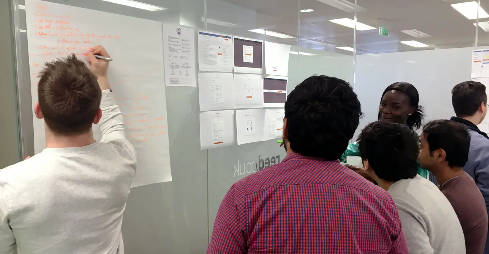
Going through the registration process looking through the persona lenses of thinking, feeling, and doing was a great way to get the team empathising with job seekers. It brought to light the underlying whys of job seeker actions, choices, and decisions and got them all eager to help solve these problems.
“...even little changes can make a big impact on users...”
Competitor analysis
The competitor analysis was not just done with our direct competitors, but also with other companies who had solved problems that we had uncovered in our own registration process.
Competitors:
Jobsite, LinkedIn, Totaljobs, Sumry, Tyba, and Twitter
This analysis really brought to light where we were lacking when compared to what others were doing around the user registration process. The following are the highlights of what we thought would be great to incorporate into our registration:
- Good microcopy for any data that helped alleviate user concerns about it eg. Telling them how filling in the “What you’re looking for” section would actually benefit them
- Short registration process - other information can be captured at other times throughout their journey
- Chunking registration process into easier to process parts for customers
- Conversational, friendly, welcoming, and easy to understand copy throughout
- Affirmative validation for users - not just error validation when something wasn’t right
- Information asked for changed on the basis of if users were a student / non-student
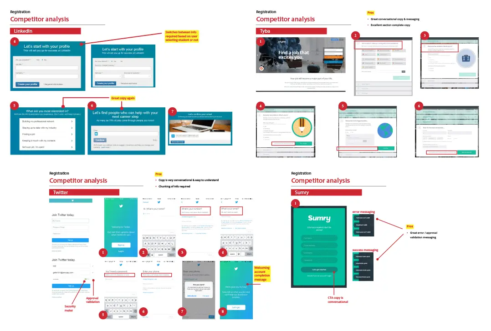
My life as a digital voyeur
It was at this stage in the project that we discovered a great tool called Hotjar, which records user sessions on any page of a website. So, being curious individuals, we quickly went about installing it on the registration page urls so we could start recording job seekers as they went through the registration process.
Sidenote: Hotjar is a great tool to see what customers are doing on the site (clicks, taps, mouse movements, etc), but what it can’t tell you is the why of user behaviours. This is where finding issues in Hotjar is a first step and then following up the why with usability sessions and interviews.
After we got the first lot of recordings (just over 3000 sessions from one night) we divided the recordings up between the team to go over them. From this analysis we discovered some common issues that continually popped up.
Insights
- A lot of users would actually scroll through the form first to see how long it was
- There was quite a bit of user hesitation when error validation fired while still typing
- A lot of the users would type more than one job title in the “Desired job title” field
- A lot of users also hesitated and took longer than expected to actually fill in the “Desired job title” and “Preferred work location” fields
- You could almost physically feel the pain of users as they tried to figure out which job sector(s) to place themself in
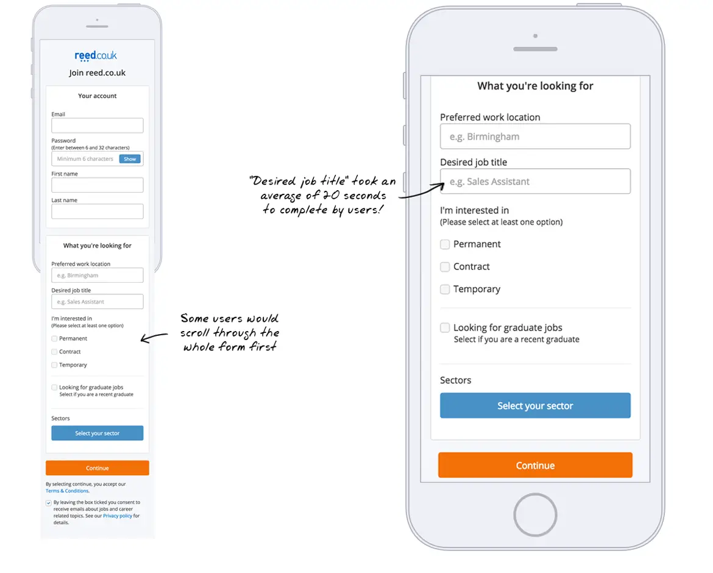
From this we were able to recognise that we really needed to improve the following:
- Behaviour of how error validation worked
- Better understanding of what each piece of data on the form was used for and to articulate the benefits of providing data to the user
- Time spent on filling in the “Desired job title” and “Preferred work location” fields needed to be reduced heavily
- Sectors selection interaction
Customer service insight
My next step was to talk to some of the customer service staff as I wanted an understanding of any recurring job seeker registration issues. I always find these customer service catchups really interesting as it’s a great way to quickly get up to speed on day-to-day customer concerns.
- Uploading CV’s with cloud services we offer is a frustrating process - customers either don’t use the services offered or they don’t know how to use cloud storage
- Some job seekers have never needed a CV for their industry eg. courier drivers just need certification and a licence. So why is it compulsory to upload a CV to apply for these roles?
- Customers don’t fit into any of our sectors or we don’t have the sector they work in
- Confusion around “Desired job title” registration field - customers were unsure what this meant and why they could only put one job in?
This chat shone some light on the issues that job seekers had with both the registration process and the CV upload part of it and helped me build even more of an awareness for job seeker concerns.
“How do I even put my CV on one of these?"
Guiding design decisions
Principles
At the end of this research phase I put together two simple design principles that would guide us through this particular project:
- The user must be able to understand why they are providing data
- We should help the user to complete the registration process where appropriate
These two principles formed the basis of how I was able to answer the whys throughout the project and allowed other stakeholders to understand the core values from which my design decisions were made.
Making decisions
It was at this stage that the Product owner and myself got together to work which of the issues we wanted to solve within the time constraint that we were under. We narrowed it down to three main issues, which we hypothesised would have the greatest value in the shortest period of time.
- Not making the user fill in information we can infer
- Informing users of the benefits of supplying particular information
- Make sure that errors are easily known and rectified
Can we use data from a job seeker's journey to assist them when they get to filling out the registration form (without them feel it’s too big brother creepy)?
What language changes can we make or improve to clear up any concerns or issues that the user would have about information asked for?
What is the right time and the right way to inform the user of the failure to provide the correct information?
Helping the user
Guidance
Recognition over recall
A powerful way that I knew we could help job seekers was to leverage recognition over recall. We could personalise and gently guide the user with past behavioural data, such as performing a job search or applying for a role from their signed out journey, and this data could then be used to provide a feed-forward suggestion prompt on necessary fields in the registration process.
Behaviour data we could use from users searching / applying for jobs:
- Job role(s)
- Sector(s)
- Location(s)
- Role type(s) eg. permanent, contract, temporary, graduate
We decided to run an A/B test with a single suggestion prompt on each of the two registration fields that were having the most time spent on them - "Desired job title" and "Preferred work location". Our hypothesis was that a relevant suggestion would help users recognise a searched location and/or job, instead of trying to recall from memory, and this would aid in reduction of friction on these fields.
Suggestion prompt logic
The question that then arose was: What single suggestion would we show to the user when there were multiple pieces of data available? For instance, if the user had done individual searches for three different job roles then we could only show one of the three different job roles. So which bit of data was of more relevance?
As a team we talked about all possible ways we could collect user behavioural data and decided on which options were the most feasable to do at this stage. I then mapped out the logic flow of these options and which we would use to surface a suggestion for the user.
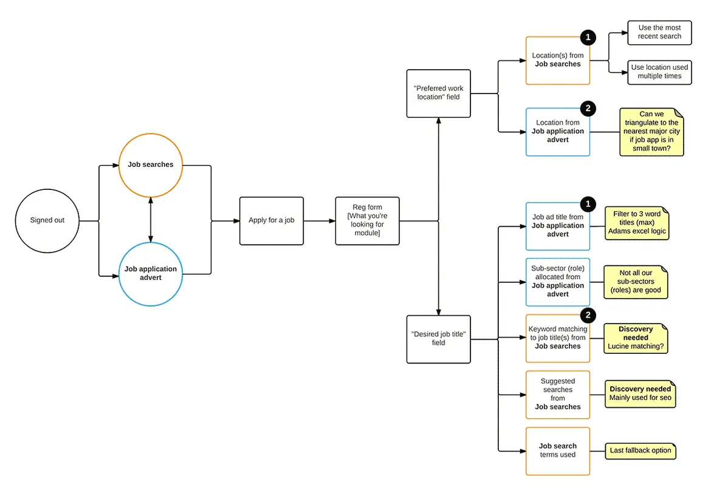
The intricate details
One of my favourite books is Dan Saffer’s Microinteractions, and I try to make sure I incorporate his four parts of a microinteraction laid out in that book (trigger, rules, feedback, and loops) every time I design an interaction such as this. The particular user goal of this microinteraction was to ease user recall and choice based on previous job search / application behaviour.
The trigger
A clickable tag that contains the suggestion copy and a signifier icon that represents an “add this suggestion to the field” action. The user should be aware that this suggestion text will be inserted into a particular field if clicked.
The rules
Loading of registration form:
- A suggestion tag will appear under related registration field when a new user has:
- Searched with keyword(s) eg. job title and / or location
- Viewed a role and clicked apply
- Only one suggestion tag will appear under the related field at a time
- If copy for suggestion tag width is too long then an ellipsis will be used
After user adds suggestion to field
- Clicking the “x” icon on suggestion tag will delete it
- If user clicks or tabs to text field the cursor will appear to the right of suggestion tag
- Hitting the backspace key in text field will delete suggestion tag
- Typing in text field will delete the suggestion tag
Feedback
When the user clicks on the suggestion tag it will smoothly transition from below the field into the related text field. The animation between these two states will help the user understand what has just happened and encourage further use if found elsewhere on the form.
Loops
To not complicate the interaction I decided no looping would be needed.
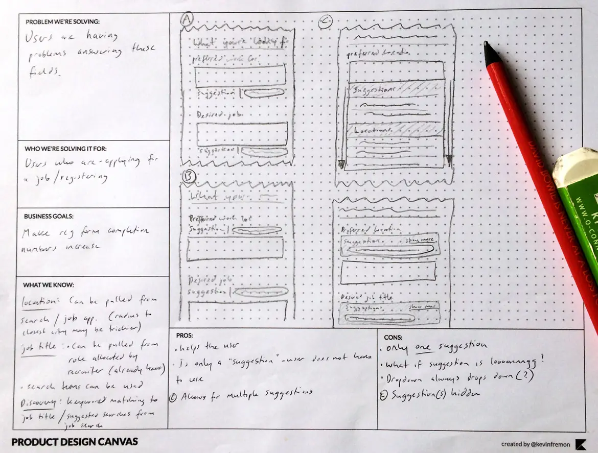
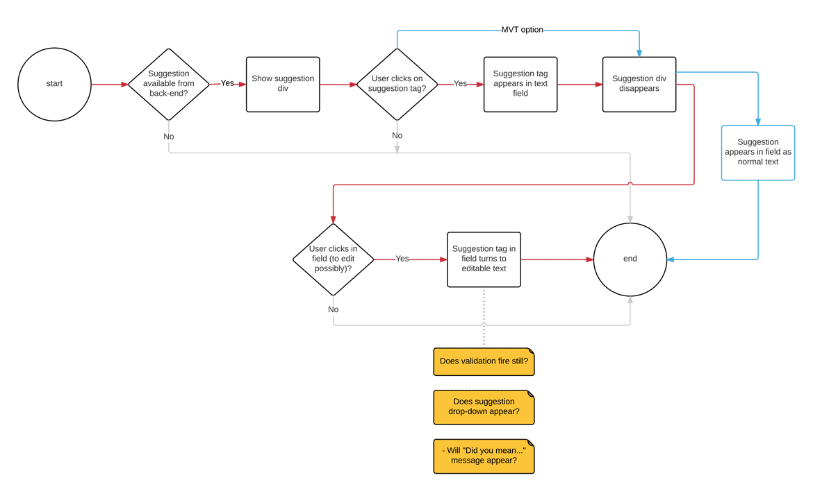
Interaction UI
The current toolkit did not include any UI element specific to what I was planning to implement, so I had to create a new element from our existing web elements. Some of what I had to consider in creating this new element were:
- Will it appear clickable?
- Does the icon make sense?
- Does a user have an expected behaviour when they click on it?
- What should be the placement of the form and in relation to the field it refers to?
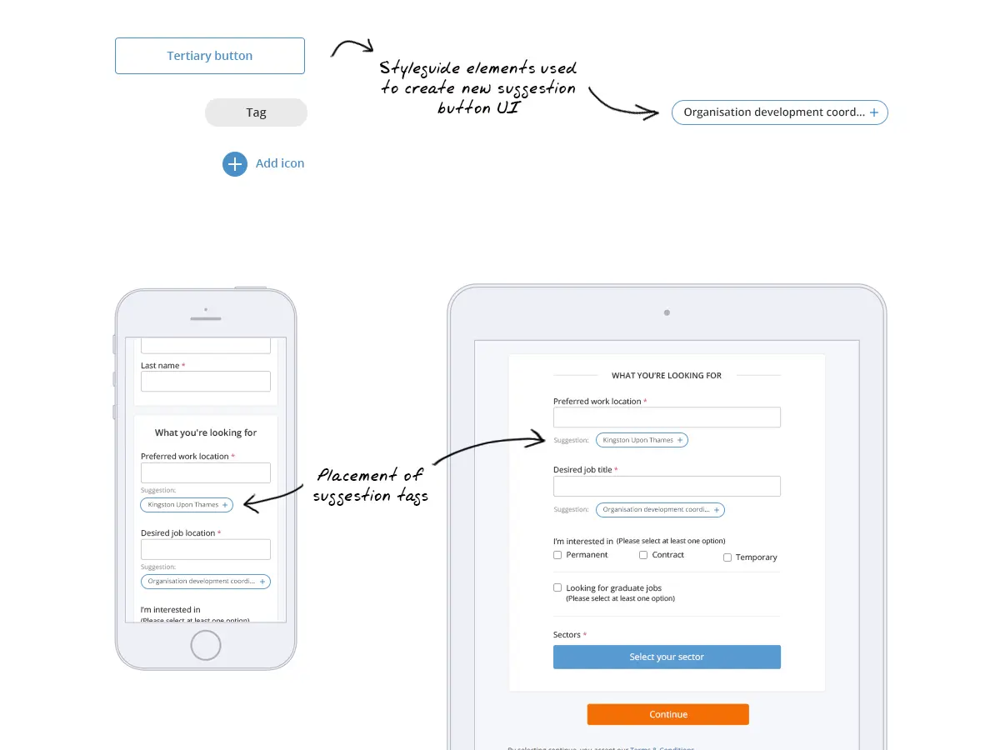
The power of copy
Language
Benefits for the user
One of the main points to come out of the competitor analysis were how other companies were quite open as to why they asked for information and how it would benefit the user. This language was usually quite friendly and conversational without being verbose or hard to understand.
A good example of this friendly aspirational microcopy is how LinkedIn open their registration journey with “Be great at what you do” compared to reed.co.uk’s uninspiring opening of “Join reed.co.uk”.
Myself and the product owner kicked off this part of the project by running a workshop with Tommy and Ellie from the marketing team to improve the language. Every bit of data that was part of the registration process we asked these questions of:
- What’s the benefit to the business?
- What exactly does the business do with this bit of data?
- What’s the benefit to the job seeker in giving us this information?
- Is there a problem from a user experience point of view?
After we had gone through and answered these questions we started to begin working out what copy and language we would use to explain benefits and ease any confusion for the job seeker. We felt we did not need to supply a justification for every piece of data (eg. first and last name), but we had to at the very least give the customer the reasons and benefits for providing some data, such as sectors, and completing each section of the form.
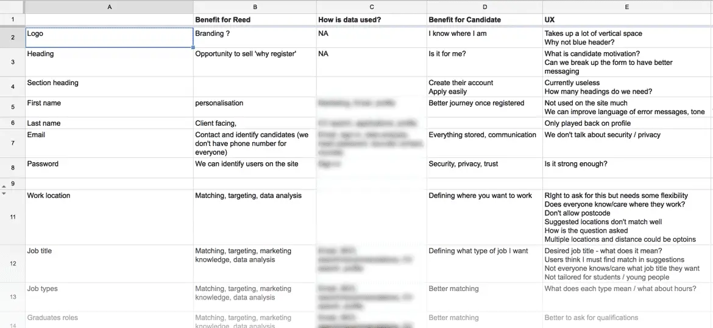
A shared understanding
Pair writing is a great real-time collaboration technique that gets various subject matter experts together (in this case being marketing, product owner, and user experience) to write for the user from different perspectives. We used this to method to work out what changes we would make and then came back together to talk over the similarities and differences in the copy chosen. We then reached a collective decision on what we agreed would work best for the user.
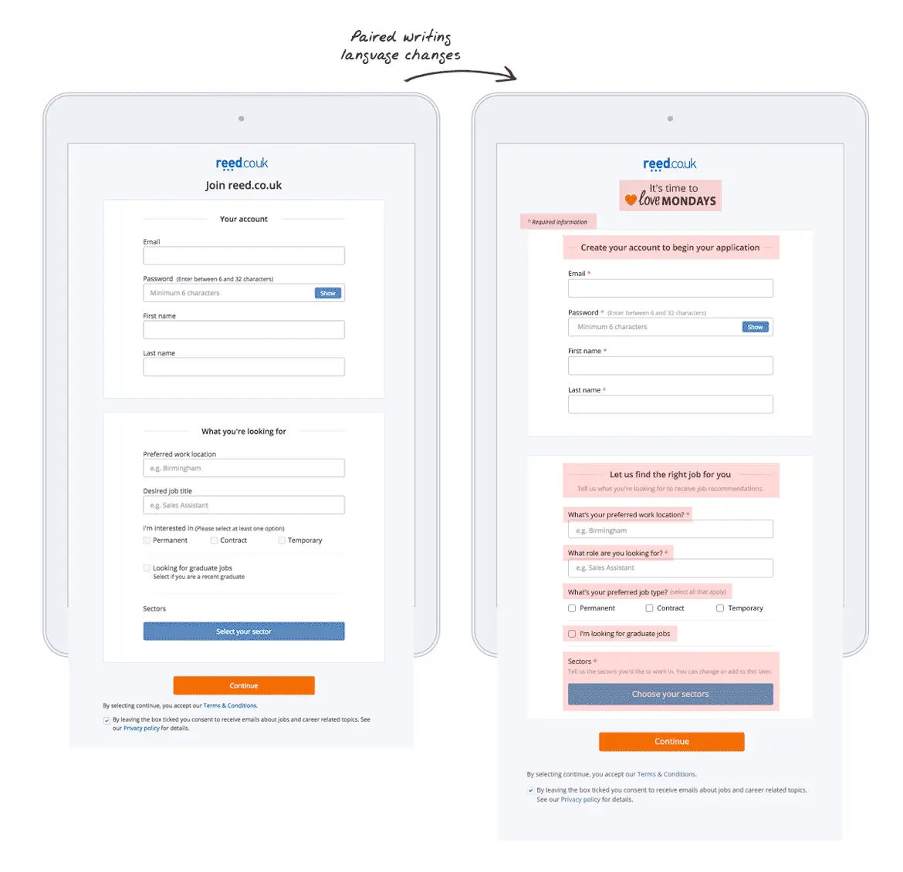
Validation issues
A smart delay
The validation dilemma
Another cause of friction was the behaviour of our validation messaging - the validation message would appear the moment a user started typing in a field. On hotjar recordings we could literally see users stop typing...then start...then stop again, as the validation message stayed on. You could almost sense that moment of confusion and/or annoyance, then realisation of what was happening, and then choosing to ignore any other validation messsaging that appeared until they had to submit the form.
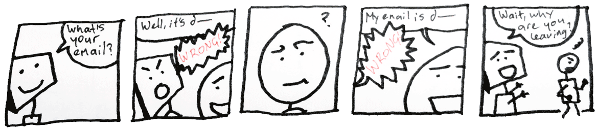
While researching validation best practices I found the conclusion of multiple studies was that validation after input helps users to complete forms more quickly and acurately, while premature validation produced longer completion times and worse satisfaction ratings. My initial solution then was to validate after the user had exited the field. It made logical sense and was best UX practice. What I hadn't counted on was technical legacy issues between the backend and the frontend codebase which threw a spanner in the works.
Overcoming legacy
The legacy issue resulted in the following:
- if validation fired after a user left the field
- and the user clicked back into the field to edit or delete the text
- then the validation message would remain visible until they left the field again
I could see that this was going to just replace one confusion with another for the user. There was no way to quickly rectify this legacy issue without some proper development resource, so I had to rethink the solution. In the end I decided to stay with the previous validation behaviour, but delayed the validation to 700 milliseconds after the user had stopped typing. From experimenting with various timings this felt like it allowed the user to still type at a comfortable speed without the validation continually appearing as it did previously.
Uncovering insight
Usability testing
Keepin' data real
Although we had used A/B testing and Hotjar for our insights and analysis so far, I knew we still needed to get these changes in front of actual job seekers to observe how they moved through the registration journey and be able to ask the why questions. For these usability sessions I also tested solely on mobile devices as research and qualitative data from actual job seekers using reed.co.uk’s responsive site on mobile was lacking.
Our frontend developer built the mobile prototype and was able to also connect it to a mirrored live database so that when I was running the sessions the users were able to experience exactly what they would happen on the live site. This really helped with the authenticity of the experience by including site behaviours such as real-time field validation and job search results. I felt that these core site interactions (only achievable with a live browser prototype) were necessary to create the real-life experience that a static click-through prototype would never be able to achieve eg. Entering wrong text in a form field and getting error validation messaging.
Usability feedback
Over four days I lead five usability sessions with participants who were currently in the process of looking for a job. In these usability sessions I really wanted to see if our changes had helped with better understanding and reducing friction, but I also gathered insights into why there was a reluctance to upload CV's on a mobile or tablet device by job seekers.
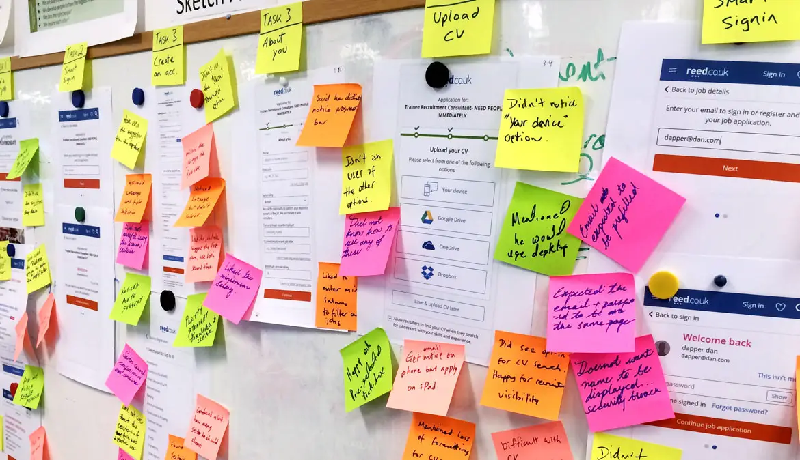
Main issues to come out of these sessions were:
- Filtering search results on a mobile was hard
- A lot of touch targets were too small for users to comfortably press
- Users still wanted to put more than one job in the “Desired Job title” field
- Users wanted to put a radius around their “Preferred work location”
- Some users didn’t notice the suggestion tag as it was out of their focus when filling in a field - though once they did see it they knew how it would work
- Most of the users would just guess which sector they would belong to
- Error validation messaging was appearing too quickly for the speed most of the users were typing at on their mobile
- Most users didn’t notice the “Save & upload CV later” option and would drop out
- All of the users did not store their CV on a cloud service, so would not be able to upload a CV from mobile
“I live in Biscester, but I want to put a 50 mile radius around it...”
The value of usability testing
Out of these sessions we also received some valuable mobile behaviour insights which I shared with the whole of the business:
- None of the participants would apply for a job on a mobile
- None of the participants would upload their CV on a mobile
- All of the participants would search for a job on their mobile
- All of the participants would save / shortlist a job on their mobile to apply for later on a desktop / laptop
Apart from initially setting out to test the registration process we also learned that jobseekers today use their digital devices for different parts of their job search experience - they are all cross device users. All users would search and shortlist jobs on their mobile, but when it came time to apply they would switch to their desktop / laptop device. This allowed them to edit and upload cover letters and CV’s on their desktop / laptop device where it is easier to edit documents.
My final recommendation to the business based on these findings were to create a customer journey map to better understand the job seekers journey across reed.co.uk's various touchpoints and beyond. Once this had been done we would be able to design and make better decisions based on a deeper knowledge of our users behaviours and attitudes.
"I use a mobile to look up a specific job and then I'll apply later. I wouldn't do the whole process on a mobile”
Mobile registration
Outcome
All in all these were very simple changes that we ended up making. By reducing friction, clarifying language, and concentrating on the small details we made a smoother registration experience for users and helped registration conversions start growing again. This is what I truly believe user experience is - being able to pay attention to the simple details, while also keeping in mind the overarching bigger picture, so users have a great product experience.
Reflections
From the usability sessions I conducted the business received huge insight into the job seeker registration and CV upload behaviour between mobile and desktop devices. With (glorious) hindsight I wish I had done the usability testing at the beginning of the project as this would have uncovered a lot of these deeper issues that were at play sooner.
From my research we also found that the sector selection was a major friction point for a lot of users (an average of five minutes being spent on this part alone!), but as the business relied extensively on this information to send job recommendations and emails to job seekers there was high-level reluctance to making any changes. Maybe if I had pushed harder (or been able to sway an influential stakeholder) this could have been an issue to prioritise, but as with any big changes to an important part of a business, I didn’t feel I had the support to do this.
Something I was proud of was aligning design decisions with my two simple design principles throughout the project. Though it is easy to forget about principles during the life of a project, I made a concerted effort to use these to guide my design decisions. These practical and actionable principles really helped in providing appropriate solutions and rationale for design decisions to stakeholders throughout the project.
All in all this project was not just about changes that helped mobile and tablet users (as originally asked for by the business), but changes that helped all users no matter which device they chose to use - always a win-win for both the business and the users.